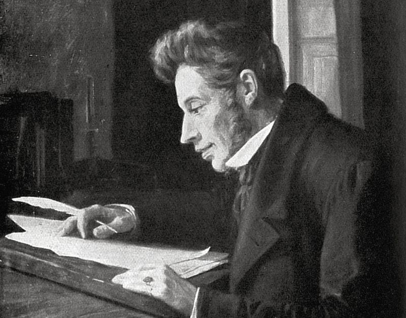

Kierkegaard

Søren Aabye Kierkegaard è stato un filosofo, teologo e scrittore danese, il cui pensiero è da alcuni studiosi considerato punto di avvio dell'esistenzialismo.
Pensiero
«Dio non pensa, Egli crea; Dio non esiste, Egli è eterno. L'uomo pensa ed esiste e
l'esistenza separa pensiero ed essere, li distanzia l'uno dall'altro nella successione [...].»
(Søren Kierkegaard, Postilla conclusiva non scientifica alle «Briciole di filosofia»)
Kierkegaard contesta Hegel, sostenendo che l'esistenza è sempre del singolo, e non può
essere ricondotta ad alcuna unità sistemica sovraindividuale. Rimprovera agli intellettuali la
scarsa coerenza tra parola e azione, mentre ammira Cristo, Socrate e Pascal per la
coerenza del loro pensiero e delle loro vite; giustifica Feuerbach "che è accusato di
attaccare il Cristianesimo mentre invece attacca i falsi cristiani"; critica ferocemente "la
onesta ipocrisia" di Schopenhauer, "il fallimento sul cristianesimo" di Schleiermacher, le
"chiacchiere" di Schelling, "l'ambiguità della filosofia" di Spinoza e "gli attacchi sottomano
fatti al cristianesimo" da Lessing.
Ridicolizza e ironizza sulla categoria dei teologi del suo tempo azzardando anche una
previsione sulla fine che faranno: "Avremo una folla di uomini che farà delle scienze naturali
la sua religione. Le scienze naturali mostrano ora che tutto un complesso di concetti che si
trovano nella Sacra Scrittura, riguardanti i fenomeni naturali, sono insostenibili: ergo, la
Sacra Scrittura non è la parola di Dio; ergo, non è la Rivelazione. Qui la scienza teologica
viene a trovarsi in imbarazzo. Perché le scienze naturali hanno forse ragione in ciò che
dicono: ma la scienza teologica desidera tanto anch'essa essere scienza, ma allora anche
qui perderà la partita. Se la cosa non fosse così seria, sarebbe molto comico pensare la
penosa situazione della scienza teologica: però se lo merita perché è la nemesi della sua
fregola di volersi spacciare per scienza".
"Una cultura mondana renderà i teologi pavidi, così ch'essi non osino altro che di darsi
l'apparenza di avere anche una patina di scienza ecc. - avranno paura a questo riguardo di
stare a tu per tu con l'uomo nero, del tutto come accadde l'altra volta con il "sistema" [...] Ciò
di cui ci sarebbe bisogno [...] coraggio personale, per osare di temere Dio più degli uomini".
Secondo Kierkegaard la dimensione esistenziale dell'uomo è segnata dall'angoscia, dalla
disperazione e dal fallimento o scacco esistenziale.
La disperazione nasce da un rapporto serio dell'uomo con sé stesso, mentre l'angoscia
nasce da un rapporto serio dell'uomo con il mondo, e consiste nel senso di inadeguatezza
che nasce dall'impossibilità dell'uomo di essere autosufficiente senza Dio. Kierkegaard pone
perciò un primo elemento, quello dell'individualità, che caratterizza tutte le forme di
esistenzialismo, e un secondo, quello del rapporto con Dio, che è tipico di tutte le forme
religiose di esistenzialismo.
L'esistenza e il singolo
«In ogni campo e per ogni oggetto sono sempre le minoranze, i pochi, i rarissimi, i Singoli
quelli che sanno: la Folla è ignorante.»
(Søren Kierkegaard, Diario)
«Io stupido hegeliano!». Con questa breve affermazione, tratta dalle carte del Diario,
Kierkegaard si rimprovera l'iniziale adesione alla filosofia hegeliana. Il pensiero di
Kierkegaard si porrà poi in netto contrasto con quello di Hegel. Il filosofo tedesco, infatti,
riconduceva ogni tipo di fenomeno, ideale e reale nell'ambito della dialettica interna e storica
dello Spirito Assoluto, nella sua infinita autorealizzazione. Kierkegaard si oppose a questa
concezione. Il perno della sua opposizione è il concetto di esistenza. La speculazione di
Hegel non considera affatto l'esistenza, bensì l'essenza delle cose, nel particolare la loro
essenza razionale.
L'esistenza è, per Hegel, un accessorio dell'essenza mentre per Kierkegaard l'esistenza (dal
latino ex-sistere, 'stare fuori') significa stare fuori dal concetto, dall'essenza universale.
L'esistenza non può essere posta in atto insieme all'essenza dal pensiero, bensì deve
essere un dato indipendente dall'attività speculativa. Occuparsi delle essenze vuol dire
occuparsi dell'universale, ma Kierkegaard, una volta appurato che essenza ed esistenza
differiscono, sposta la sua attenzione dall'universale astratto (riguardante soltanto le entità
logiche) all'individuale: il Singolo, l'individuo concreto. Kierkegaard capovolge
completamente il significato che Hegel attribuiva al termine "concreto". Concreta non è più la
totalità, ma l'individuo. L'astrattezza sarà attributo dell'universalità.
L'esistenza, quindi, spetta proprio all'individuo. Come già sosteneva Aristotele, essa non
compete alle essenze universali (per esempio al concetto di "umanità") perché sono soltanto
delle entità logiche pensate ma non esistenti. L'esistenza per Aristotele compete solo
all'individuo nella sua specifica concretezza, cioè a Pietro, Paolo ecc., sostanze prime che
indicano le specie ultime. Il singolo uomo esistente si distingue dai generi (per Aristotele,
"sostanze seconde") a cui appartiene perché, pur godendo degli attributi generali della sua
specie (per l'uomo, l'umanità), possiede anche aspetti particolari e irripetibili che lo
caratterizzano individualmente, e che non si possono dedurre logicamente dalla sua
essenza universale. Questo discorso vale tanto per l'individuo umano quanto per il singolo
animale o vegetale. Tuttavia, Kierkegaard sottolinea due differenze che sussistono fra
l'esistenza di un uomo e quella di qualsiasi altro essere vivente:
In primo luogo, mentre nel mondo vegetale e animale è più importante la specie
dell'individuo che esiste concretamente, nel mondo umano la situazione è inversa. Infatti,
l'uomo singolo non può essere sacrificato alla specie, dato che ogni essere umano è una
creatura forgiata a immagine e somiglianza di Dio.
In secondo luogo, ciò che contraddistingue l'esistenza dell'uomo singolo rispetto agli altri
esseri viventi è la possibilità di scegliere e la libertà di decidere. Il comportamento dei singoli
animali è condizionato necessariamente dall'istinto. Invece i singoli uomini, nel corso della
loro vita, si trovano sempre davanti a più possibilità di fronte alle quali sono totalmente liberi
di decidere.
La libertà di scelta però è anche responsabilità individuale di fronte al bene e al male. E, da
questo punto di vista, la possibilità genera nell'uomo il caratteristico sentimento
dell'angoscia. Kierkegaard, dunque, stabilisce il primato della parte sul tutto, dell'io empirico,
che era considerato da Hegel una tappa particolare, e in sé incompiuta, nel procedere
dell'Assoluto, e contrappone alle tesi hegeliane la concezione dell'uomo propria del
Cristianesimo. Nella religione cristiana si assegna un valore infinito proprio al "piccolo io"
con il proposito di renderlo beato in eterno. Kierkegaard rimprovera a Hegel di aver
dimenticato di essere un uomo singolo.
Ironizza poi sul professore hegeliano che si affanna a spiegare tutta la realtà, riducendola a
un sistema logico, ma non si ricorda neppure come si chiama perché ha dimenticato di esser
un individuo. Il filosofo danese non comprende nemmeno il perché gli hegeliani introducano
la contraddizione nel loro sistema per poi superarla in una superiore unità sintetica che
racchiude tutte le parti e le armonizza. La contraddizione non è quindi assolutamente reale
ma è astratta cioè una separazione arbitraria di ciò che tanto è unito. Sarebbe stato
sufficiente negare fin dall'inizio l'opposizione affermando che la realtà è stabile e indivisa.
L'esistenza non ha nulla a che vedere con l'universale, quindi l'opposizione c'è solo sul
piano astratto del pensiero non nella realtà, il movimento di superamento delle opposizioni
quindi è fittizio e non ha riscontro nella realtà - anche se per gli hegeliani l'opposizione che
conduce alla sintesi è insita nella struttura della realtà.
Possibilità, angoscia e disperazione
Secondo il filosofo di Copenaghen porsi dal punto di vista dell'Assoluto è impossibile poiché
l'uomo, in quanto singolo non può uscire dalla sua soggettività. Che l'uomo reale sia un
singolo non impedisce, secondo Kierkegaard, che la soggettività possa assumere un valore
assoluto. Nella sua tesi di laurea Sul concetto di ironia in riferimento costante a Socrate
(1841) egli mostra come il "saper di non sapere" permetta a una soggettività finita, negando
ogni determinazione specifica, di aprirsi verso una soggettività infinita, cioè un principio
indeterminato dell'esistenza, di cui (pur non conoscendolo) bisogna ammettere la possibilità.
Negando la necessità si apre però l'orizzonte infinito della possibilità.
Se Hegel si era posto dal punto di vista dell'Assoluto per comprendere la necessità
dell'essere, Kierkegaard rinunciando a universalità e oggettività non va oltre la sfera della
possibilità. Le diverse determinazioni che può prendere la vita umana non sono altro che
possibilità che l'uomo si trova di fronte e tra le quali deve scegliere. Questa totale apertura
verso il possibile, la condizione di incertezza e travaglio di fronte alla scelta tra le possibilità,
dà vita all'angoscia. Essa è quella "vertigine" connaturata all'uomo che deriva dalla libertà,
dalla possibilità assoluta.
Subentra l'angoscia quando si scopre che tutto è possibile. Ma quando tutto è possibile è
come se nulla fosse possibile. C'è sempre la possibilità dell'errore, del nulla, la possibilità di
agire con esiti imponderabili. L'angoscia, a differenza della paura, che si riferisce sempre a
qualcosa di determinato e cessa quando cessa il pericolo, non si riferisce a nulla di preciso e
accompagna costantemente l'esistenza dell'uomo. Kierkegaard vive e scrive sotto il segno di
questa incertezza: di fronte ad ogni alternativa, Kierkegaard si è sentito paralizzato per le
infinite possibilità che gli si prospettavano. A suo giudizio, l'angoscia non è un sentimento
che possa essere o non essere presente nell'uomo: l'angoscia è essenzialmente connessa
all'esistenza umana, in quanto quest'ultima è divenire verso l'ignoto. L'angoscia è dunque
letta come fondamento stesso della condizione umana, primigenio e ineliminabile.
La scoperta della possibilità, e quindi dell'angoscia, è stata risvegliata per la prima volta in
Adamo dal divieto di Dio. Prima di ricevere da Dio il divieto di mangiare dell'albero del bene
e del male, Adamo era innocente: non aveva, cioè, la coscienza delle possibilità che gli si
aprivano davanti. Quando riceve da Dio il divieto, acquista la coscienza di "poter" sapere la
differenza fra il bene e il male. Diventa consapevole della possibilità della libertà. E
l'esperienza di questa possibilità è l'angoscia. L'angoscia è a fondamento del peccato
originale: l'angoscia, il sentimento delle possibilità che gli si aprono davanti, mettono Adamo
nella possibilità di peccare, di infrangere il decreto divino.
Se l'angoscia subentra nel rapporto tra l'io e il mondo esterno dalla consapevolezza che
tutto può essere e quindi dall'ignoranza di ciò che accadrà, la disperazione invece subentra
nel rapporto tra l'io con sé stesso. La disperazione è dovuta al fatto che la possibilità dell'io,
che scelga o meno di volere sé stesso ossia se decida o meno di accettarsi per ciò che è,
conduce sempre ad un fallimento:
Se l'io sceglie di volere sé stesso, cioè sceglie di realizzarsi, viene messo di fronte alla sua
limitatezza e all'impossibilità di compiere quanto ha deciso.
Se l'io sceglie di non volere sé stesso e quindi di esser altro da sé, si scontra nuovamente
con un'altra impossibilità.
Ne consegue, in entrambi i casi il fallimento e quindi la conseguente disperazione, definita
da Kierkegaard «malattia mortale» nell'omonima opera del 1849. Mortale non perché
conduce alla morte, ma perché essa fa sperimentare all'uomo la sua incapacità di vivere, la
sua non vita, la sua morte spirituale. La disperazione è il sentimento che accompagna la
persuasione di una sconfitta inevitabile e irreparabile.
Il paradosso della fede
L'unico esito positivo che angoscia e disperazione possono avere è la fede. L'impossibilità
dell'io, che porta alla disperazione, e la possibilità del nulla, che porta all'angoscia, hanno
come unica soluzione l'aggrapparsi dell'uomo all'unica possibilità infinitamente positiva, cioè
Dio. Così l'uomo pur rimanendo fedele al proprio compito di essere sé stesso riconosce la
sua insufficienza ma non la vive come un peso ma come l'effetto di dipendenza da Dio. Il
credente viene rassicurato dal fatto che il possibile non è compito suo ma è nelle mani di
Dio.
Il passaggio alla fede non è un progresso graduale, ma un salto senza mediazioni
nell'irrazionale - poiché la fede esula dalle spiegazioni razionali - che l'uomo nella sua
esistenza decide di compiere abbandonandosi così in un rapporto in cui è solo con Dio.
Accedendo alla fede il credente decide di abbandonare ogni comprensione razionale
accettando anche l'"assurdo". Questo è il "paradosso della fede", la quale è vera proprio
perché supera la comprensibilità umana. Quindi nemmeno la fede può assicurare certezza e
riposo, poiché è assurdità. Per la ragione, infatti, è qualcosa di paradossale e scandaloso la
fede in un Uomo che è insieme Dio, in un individuo storico che è insieme metastorico.
Impensabile, razionalmente, è anche l'intimo rapporto fra Dio e l'uomo. Infatti Dio è
trascendenza, «infinita differenza qualitativa», e ciò implica una distanza incolmabile fra Lui
e l'uomo, distanza che sembra escludere qualsiasi familiarità. L'irruzione dell'uomo, essere
finito e temporale, nell'elemento dell'eternità e dell'infinito è la fede, mentre l'irruzione
dell'eternità nel tempo è l'"attimo" in cui Dio si rivela all'uomo, in cui l'infinito si manifesta al
finito. Nel pensiero di Kierkegaard, che rappresenta la rivincita della religione contro la
filosofia, della fede contro la ragione, sembra di riascoltare l'affermazione del teologo
africano Tertulliano del II-III secolo d.C., al quale è attribuita la frase credo quia absurdum
est ("Credo perché è assurdo"), in realtà "credo quia ineptum est" (De carne Christi, 5,4).
Secondo questo paradosso, scaturito da un fideismo antintellettualistico, i dogmi della
religione vanno difesi con convinzione tanto maggiore, quanto minore è la loro compatibilità
con la ragione umana.
Poiché la fede è irrazionale, Kierkegaard critica la concezione hegeliana o quella propria
anche della chiesa luterana moderna, che cercano di conciliare ragione e fede. Secondo
Kierkegaard, la teologia scientifica pretende infatti di spiegare l'inesplicabile. Inoltre,
Kierkegaard criticò la chiesa danese che insisteva sull'osservanza delle regole esteriori. A
suo giudizio, la vera religione è quella fondata sul rapporto diretto e interiore fra uomo e Dio.
La paradossalità della fede, la rinuncia all'uso dell'analisi razionale, qualificano la filosofia di
Kierkegaard come irrazionalista, e ad essa guarderanno con interesse diverse tendenze del
pensiero del Novecento, come, per esempio, l'Esistenzialismo.
Questo movimento filosofico si affermerà in Europa, e precisamente prima in Francia e in
Germania e poi anche negli altri paesi, nel periodo compreso fra le due guerre mondiali e
negli anni immediatamente successivi al secondo dopoguerra, e si fonderà sull'analisi
dell'esistenza umana (appunto già affrontata da Kierkegaard). L'opposizione principale tra
l'idealismo e l'esistenzialismo è che mentre il primo pone l'essenza prima dell'esistenza, il
secondo pone l'esistenza per prima, e l'essenza dopo. Nascerà un vero e proprio scontro
che vedrà in Italia, per esempio, vincitori due idealisti molto diversi: Giovanni Gentile e
Benedetto Croce. Dunque, al termine della sua analisi, Kierkegaard è arrivato alla
conclusione che le caratteristiche fondamentali dell'esistenza umana sono tre: l'angoscia,
che domina il rapporto fra l'uomo e il mondo; la disperazione, che domina il rapporto
dell'uomo con sé stesso, e il paradosso, che domina il rapporto dell'uomo con Dio.
Le tre modalità residenziali
«Non c'è nulla che spaventi di più l'uomo che prendere coscienza dell'immensità di cosa è
capace di fare e diventare.»
(Søren Kierkegaard)
Il padre di Kierkegaard fu un lettore di Christian Wolff, il maestro di Kant che introdusse la
distinzione fra le tre metafisiche speciali, e Kierkegaard stesso restò influenzato sia da Wolff
che da Kant, forse sino a riprendere la struttura e il contenuto tripartiti del loro pensiero
filosofico per formulare le proprie "tre modalità esistenziali".
Secondo Kierkegaard si può esistere in tre diversi modi che si escludono fra loro. Come già
nel testo del 1845 Stadi sul cammino della vita, le possibili tappe sono però meglio definite
come «sfere di vita» chiuse, autonome e reciprocamente impermeabili, immobili polarità
intellettuali ed emotive la cui dialettica non è temporale e progressiva come quella di Hegel,
ma statica e spaziale, fatta di situazioni che non evolvono: si può vivere tutta l'esistenza in
una sola dimensione, si può progredire ma anche regredire. Nell'opera Aut-Aut del 1843, egli
presenta l'alternativa fra le prime due sfere, quella estetica e quella etica. Nell'opera Timore
e tremore, sempre del 1843, emerge la terza sfera, quella religiosa. Il filosofo non si
riconoscerà nelle prime due, ma si giudicherà pure inetto alla terza per via d'una sua
"teologia sperimentale" che gli si dimostrerà fallimentare.
Secondo Kierkegaard, il passaggio da una forma di vita all'altra non avviene per necessità
dialettica come in Hegel. Per Hegel, dialetticamente e necessariamente, cioè in modo
inevitabile, l'uomo si costituisce prima come essere etico nello Stato; poi, sempre per
necessità dialettica, si costituisce come essere estetico, religioso, e infine filosofico. Invece,
secondo Kierkegaard, questo passaggio avviene per libera scelta. Inoltre, per Hegel la
dialettica fa sì che nel terzo momento i primi due siano conservati (anche se superati).
Invece, per Kierkegaard, attività estetica, etica e religiosa si presentano al singolo come
possibilità tra le quali egli deve scegliere, cosicché, scegliendo l'una, è costretto a rifiutare le
altre. Fra di esse c'è un abisso e un salto. La dialettica di Kierkegaard fra le forme alternative
di vita è "qualitativa" e non "quantitativa" come quella di Hegel: non ammette sintesi, cioè
conciliazione e armonia fra gli opposti, ma solo passaggio brusco da un opposto all'altro, e i
due opposti si escludono a vicenda senza conciliarsi. Per esempio, tra la vita religiosa e le
altre forme di esistenza non c'è mediazione: non è possibile essere cristiani "fino a un certo
punto". O lo si è interamente o non lo si è. La dialettica quantitativa hegeliana si può
riassumere nella formula "et-et", mentre la dialettica qualitativa kierkegaardiana nella
formula "aut-aut", che sta a indicare la scelta esclusiva di uno degli opposti.
La vita estetica
Lo stadio estetico è quello in cui l'uomo manifesta indifferenza nei confronti dei princìpi e dei
valori morali. L'esteta non crede nelle leggi etiche tradizionali. Ritiene invece fondamentali e
primari i valori della bellezza e del piacere e a essi subordina tutti gli altri valori (anche e
soprattutto quelli morali). L'esteta è teso solo al soddisfacimento di sempre nuovi desideri e
considera il mondo come uno spettacolo da godere. Si lascia vivere momento per momento.
Si abbandona al presente fuggendo legami con il passato, rinunciando al ricordo, e con il
futuro, non avendo speranza. Vive nell'istante, cioè vive per cogliere tutto ciò che vi è
d'interessante nella vita, trascurando tutto ciò che è banale, ripetitivo e meschino. Il suo
motto è la massima del poeta latino Orazio: carpe diem quam minimum credula postero
(cioè "cogli l'oggi", vivi alla giornata e credi nel domani il meno possibile).
Il tipo dell'esteta è per Kierkegaard il "seduttore", rappresentato dal personaggio di Don
Giovanni, il leggendario cavaliere spagnolo prototipo del libertino, immortalato nell'omonima
opera di Mozart. Don Giovanni non si lega a nessuna donna particolare perché vuole poter
non scegliere: il seduttore è sciolto da ogni impegno o legame e vive nell'attimo, cercando
unicamente la novità del piacere. Don Giovanni seduce migliaia di donne senza riuscire ad
amarne davvero nessuna. Don Giovanni è la figura che incarna la sensualità, l'erotico. Non a
caso, questo personaggio è immortalato dalla musica. La musica, infatti, è la più sensuale
delle arti, perché si rivolge direttamente ai sensi, senza passare attraverso il concetto, la
parola.
Ma Kierkegaard esprime un giudizio negativo sull'esteta. Infatti, chi non sceglie e si dedica
solo al piacere cade ben presto nella noia, cioè nell'indifferenza nei confronti di tutto, perché,
non impegnandosi mai, non vuole profondamente e sentitamente nulla. Infatti, la noia è uno
stato esistenziale che sorge quando una persona è affettivamente o progettualmente
demotivata. Inoltre l'esteta, se si ferma, cioè se smette di ricercare il piacere e riflette
lucidamente su sé stesso, è assalito dalla disperazione. Poiché ha scelto di non scegliere,
poiché non ha accettato di fare delle scelte, non si è impegnato in un programma di vita, egli
non è nessuno. È nulla. Ha rinunciato a costruirsi un'identità, una personalità definita.
Avverte così, con disperazione, il vuoto della propria esistenza, senza senso e senza centro.
La disperazione è il terrore del vuoto, del non essere altro che niente.
La vita etica
Consapevole della disperazione connessa alla vita estetica, l'uomo può decidere di
cambiare tipo di esistenza, optando per la vita etica. Nello stadio etico, l'uomo vive
conformemente a ideali morali e cerca di assumersi delle responsabilità. Sceglie fra il bene e
il male e accetta i compiti seri della famiglia, del lavoro, dell'impegno nella società, dell'amor
di patria e affronta serenamente i sacrifici necessari per restare fedele a tali compiti.
Kierkegaard, nell'illustrare questo tipo di vita, ha presente il momento dell'eticità descritto da
Hegel, cioè il momento in cui lo spirito oggettivo si incarna nelle istituzioni della famiglia,
della società civile e dello Stato. La figura del "marito", cioè dell'uomo che ha scelto una sola
donna e ha accettato i doveri del matrimonio, è per Kierkegaard l'emblema dello stadio etico,
ed è contrapposta a quello del seduttore. L'uomo etico è incarnato, nell'opera Aut-aut dal
Consigliere di Stato Guglielmo. Il consigliere Guglielmo, che ha scelto la vita etica, è un
marito fedele, un professionista onesto e laborioso e un funzionario esemplare. Mentre il
seduttore vive sempre nell'istante, ma perde sé stesso, il marito, che ha fatto delle scelte
etiche e programma in base a esse il suo futuro, sembra edificarsi una personalità. Appare
pacificato e tranquillo, non vive per l'istante bensì nella continuità del tempo in cui egli non fa
che riaffermare, riconfermare la sua "scelta" iniziale.
Tale "ripetizione" della scelta effettuata è indice dell'abbandono dell'eccezionalità e
dell'entrata dell'"universalità del dovere", in cui il dovere non è imposto bensì scelto
dall'uomo etico come propria condizione. Anche la vita etica appare, però, limitata. Infatti,
l'eticità è spesso caratterizzata dal convenzionalismo e dal conformismo. Nell'adesione a
una legge generale, l'uomo che vive eticamente non riesce a valorizzare appieno la sua
autentica individualità, rischia di perdersi nell'anonimato, di non trovare davvero in sé stesso
la più intima e profonda personalità. Chi sceglie la vita etica e si assume delle responsabilità
sociali, chi diventa, per esempio, giudice o militare, o uomo politico, fa solo ciò che fa la
gente; fa solo ciò che "si" fa; pensa solo ciò che "si" pensa, per dirla con l'Heidegger di
"Essere e tempo". L'uomo etico se sceglie sé stesso fino in fondo raggiunge la propria
origine, Dio, di fronte alla sua infinitezza non può che provare inadeguatezza morale e senso
di colpa.
Secondo Kierkegaard, il passaggio dallo stadio etico allo stadio religioso può essere
predisposto dal pentimento, cioè dalla presa di coscienza di questa insufficienza. L'etica
pura, che ci propone degli ideali assoluti difficili da realizzare, ci dice che dobbiamo essere
sempre insoddisfatti di noi stessi, che non c'è niente nella nostra vita che sia interamente
buono. Ma il pentimento può paralizzare e lasciare scoraggiati. Si può superare questa
paralisi spirituale con l'esperienza religiosa, cioè accettando per fede che, malgrado le
nostre debolezze, Dio è comunque in grado di cancellare i nostri peccati e di redimerci. Così
il pentimento ci prepara per il salto nello stadio religioso.
La vita religiosa
«Io sono e sono stato uno scrittore religioso, tutta la mia attività letteraria si rapporta al
cristianesimo, al problema di diventare cristiani.»
«La categoria della mia attività di scrittore è di rendere attenti alla realtà cristiana e io sono
soltanto una certa specie di poeta e pensatore.»
(Søren Kierkegaard, Sulla mia attività di scrittore)
Kierkegaard descrive lo stadio religioso nell'opera Timore e tremore la quale, fin dal titolo,
preannuncia l'atteggiamento dell'uomo davanti alla divinità. L'uomo realizza veramente sé
stesso come singolarità, come individuo, solo nella sfera religiosa. Innanzi tutto, quando
l'uomo si pone di fronte a Dio, deve abbandonare le finzioni, i mascheramenti e le illusioni. Si
mostra a Dio e a sé stesso nella sua vera individualità, nella sua autenticità di peccatore.
L'esperienza religiosa prova l'esistenza di un'interiorità nascosta nell'uomo, cioè di una
dimensione interiore profonda e individuale, in cui avviene il rapporto personale con Dio.
Inoltre, l'uomo che si pone solo davanti a Dio ha la possibilità di affermarsi come singolo,
perché Dio può prescrivergli un comandamento singolare che sfida e offende le leggi
dell'etica.
Nella vita etica, per Kierkegaard, l'uomo conosce cos'è buono e giusto e cosa non lo è; nella
sfera della religione invece non può più appigliarsi a questi valori. Egli è solo,
completamente solo davanti a Dio. L'uomo religioso, "il cavaliere della fede" per eccellenza è
incarnato da Abramo. Abramo, il padre dei credenti, primo patriarca del popolo ebraico, vive
fino a quasi novant'anni nel rispetto della legge morale. Solo allora viene premiato da Dio col
miracolo di ricevere un figlio, Isacco, da Sara, la moglie ormai anziana, e vede dunque
appagato il desiderio tanto vivamente sentito di avere una discendenza legittima. Ma Dio,
per mettere alla prova la sua fede, gli ordina di sacrificare a lui questo figlio, il suo unico
figlio. Abramo non esita a intraprendere il sacrificio e decide di fare eccezione alla legge
morale che prescrive di non uccidere. Se non che, all'ultimo momento, interviene l'Angelo
del Signore e ferma la sua mano che sta per immolare Isacco. Abramo quindi calpesta i
valori dell'etica comune del tempo, comportandosi da credente e non da buon padre perché
l'unica giustificazione per il suo gesto sarebbe stata ascrivibile alla volontà divina.
Abramo è pronto ad ubbidire, non invoca contro il cielo per il comando di Dio
apparentemente crudele. Dio gli ha permesso di avere quel figlio miracolosamente da sua
moglie sterile, Dio può chiedergli qualsiasi cosa, anche di sopprimerlo in Suo sacrificio.
Abramo ha fede anzi è l'eroe della fede. Proprio in questo consiste l'ubbidienza, ubbidire
subito e incondizionatamente, all'ultimo momento. Abramo non riflette, ubbidisce. Se Dio
comanda, vuol dire che quel comando è giusto! Abramo non valicò con le riflessioni i limiti
della fede. Le riflessioni hanno solo l'effetto di far trasgredire i limiti, dice Kierkegaard. Ma
Abramo, il Padre della Fede, rimase nella Fede lungi dai limiti, da quei confini in cui la fede
svanisce nella riflessione.
Fuori dall'etica compare il "rischio" perché nessuno può esser certo di non sbagliare. Isolato
da tutto e tutti egli è un'eccezione assoluta, le regole etiche non lo aiuteranno a capire. La
fede consiste proprio nel "paradosso" per cui esiste un'interiorità incommensurabile con
l'esteriorità. Il credente, il singolo, che per l'etica è subordinato alle leggi universali, si troverà
in condizione di superiorità rispetto all'universale grazie al rapporto individuale che intrattiene
con l'Assoluto. La fede è vera non oggettivamente - giacché si fonda su rapporto soggettivo
con Dio -, non razionalmente, essa è vera in quanto va al di là della comprensibilità umana.
Nel momento in cui entriamo in rapporto con Dio, con il fine supremo e ultimo della nostra
vita, tutto il resto, anche la conformità alle regole etiche, deve eclissarsi: nella religione ci
dobbiamo abbandonare completamente a Dio ed avere fede in Lui al di sopra di tutto, come
fece Abramo, anche contro i dettami dell'etica. Non c'è dunque continuità fra la vita etica e
quella religiosa. Tra esse, anzi, c'è un abisso ancora più profondo che tra l'estetica e l'etica.
La vita religiosa è esistenza vissuta al di fuori e al di sopra dell'etica, in conformità con la
fede. Kierkegaard distingue il gesto di Abramo (l'eroe religioso) da quello di Agamennone
(l'eroe tragico). Agamennone è il comandante supremo dei Greci nella guerra contro Troia,
che accetta il sacrificio della figlia per placare la dea Artèmide (la Diana dei romani).
La vicenda di Agamennone è la seguente: la flotta greca deve trasportare gli Achei a Troia
per punire la città del rapimento di Elena (moglie di Menelao, fratello di Agamennone),
effettuato da Paride (figlio di Priamo, re di Troia). Ma la flotta rinvia la partenza di giorno in
giorno per la mancanza di venti favorevoli. L'indovino Calcante attribuisce questo fatto alla
collera di Artemide, dovuta a un'offesa che Agamennone ha fatto alla dea. Calcante rivela
che Artemide si placherà solo se Agamennone le sacrificherà la figlia Ifigenia. E così, per
permettere la partenza degli Achei, Ifigenia viene immolata sull'altare della dea. Secondo
Kierkegaard, quella di Agamennone non è, come quella di Abramo, una scelta religiosa,
perché rimane entro i confini della morale. Infatti, come capo degli Achei, Agamennone ha il
dovere morale di salvare il suo popolo: nella sua scelta fra la responsabilità di capo e quella
di padre, si scontrano due princìpi morali, ed egli ubbidisce a quello che è superiore all'altro.
Abramo, al contrario, è andato oltre i confini dell'etica, del bene e del male. La sua è stata
una scelta esclusivamente di fede. Comunque, secondo Kierkegaard, nella fase religiosa ci
lasciamo dietro l'etica, ma senza abolirla. Infatti Kierkegaard precisa che l'etica viene ben
presto ripristinata dal comando singolare di Dio. Dio, infatti, ci fa compiere, per obbedienza
di fede, gli stessi atti che ci sono imposti, sul piano subordinato dell'etica, dalla nostra
ragione. Ma, nella sfera religiosa, il caso del comando eccezionale, scandaloso, è sempre
possibile.